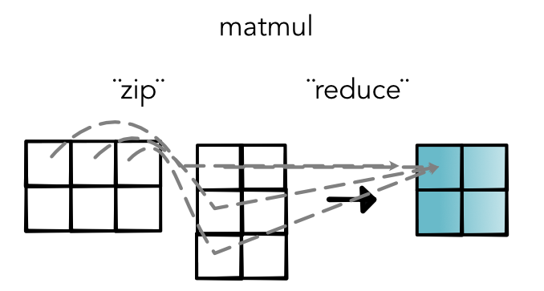
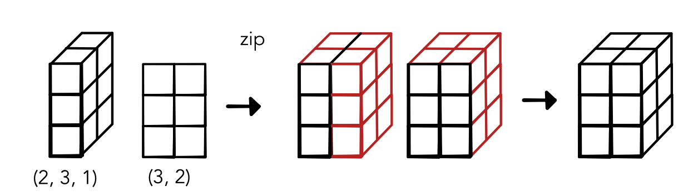
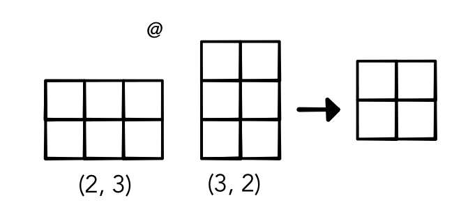

Machine Learning Engineering
Lecture 17
Network Efficiency
Module 3
Task 3.1
Parallel
Task 3.2
Matrix Mult
Today's Class
Review: Numba
Operator Fusion
MatMul
Numba
Alternative 3: Compile Python
Pros:
"Same" language
Integrate code
Cons: A bit hacky :)
Example: Numba
Function Calls
Function calls are not free and don't get inlined
Checks for args, special keywords and variable lists
Methods check for overrides and class inheritance
Types
Critical code
out[o] = in_storage[j] + 3Doesn't know type of in_storage[j]
May need to coerce 3 to float or raise error
May even call __add__ or __ladd__!
Numba
Python library for speeding up numerical python
API: Higher-order functions to produce fast mathmatical code
How does it work?
Numba
def my_code(x, y):
for i in range(100):
x[i] = y + 20
...
my_code(x, y)
fast_my_code = numba.njit()(my_code)
fast_my_code(x, y)
fast_my_code(x, y)What do we lose?
njit will fail for many python operations
No lists, classes, python functions allowed
Any different types will cause recompilation
Notebook
Lecture Quiz
Parallel
Parallel
Run code on multiple threads
Particularly suited for map / zip
Baby steps towards GPU
Parallel Range
Replace for loops with parallel version
Tells compiler it can run in any order
Be careful! Ideally these loops don't change anything
Code Transformation
Transform
def my_code(x, y):
for i in prange(100):
x[i] = y + 20
...
my_code(x, y)
fast_my_code = numba.njit(parallel=True)(my_code)
fast_my_code(x, y)
fast_my_code(x, y)Nondeterminism
No guarantee on ordering
Need to be careful with reductions
Speedups will depend on system
Notebook
Parallel Bugs
Warning! Nasty bugs
Tests failing randomly
Crashes due to out-of-bounds
Parallel Diagnostics
Diagnostics give parallel compilation
Useful to see if you are getting benefits
Operator Fusion
User API
Basic mathematical operations
Chained together as boxes with broadcasting
Optimize within each individually
Fusion
Optimization across operator boundary
Save speed or memory in by avoiding extra forward/backward
Can open even great optimization gains
Automatic Fusion
Compiled language can automatically fuse operators
Major area of research
Example: TVM, XLA, ONXX
Automatic Fusion

Manual Fusion
Utilize a pre-fused operator when needed
Standard libraries for implementations
Example: Matmul
Example: Matmul

Matmul Simple
Advantages
No three dimensional intermediate
No save_for_backwards
Can use core matmul libraries (in the future)
Computations
Starter Code
Walk through output.
Find row and column of input
Simultaneous zip / reduce.
Example: Matmul